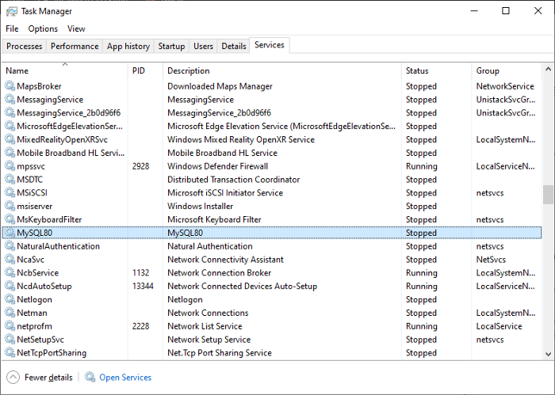

Access Denied root@localhost — Solved — MySQL Server — Windows — Reset Root Password
This error can be fixed by running the "ALTER USER" command in the CMD. I will show you how to get it done, step by step. Follow my steps carefully.
STEP 1
First, you need to stop MySQL from running in the system. For that, go to Task Manager by pressing CTRL+SHIFT+ESCAPE in combination or by simply searching
for the task manager in the Search of Windows Home screen.
Go to the Services Tab of task manager and find the MySQL service and right-click on it and click and press Stop.

Right Click and STOP the process from running
STEP 2
Create a text file with the following command in it. And name it mysql-init.txt (BTW, the name can be anything. In this particular instance I chose this name) And save it on the Desktop. In the IDENTIFIED BY section, type the password you originally used when you installed your My SQL workbench of the server.
ALTER USER ‘root’@’localhost’ IDENTIFIED BY ‘root’
STEP 3
Copy your saved text file and copy it to the C drive.
C:\
STEP 4
Navigate to the folder where you had MySQL Server installed. The file path will be as below. (If you had your MySQL server installed in the C drive)
C:\Program Files\MySQL\MySQL Server 8.0\bin
STEP 5
Copy your file path and open the Command Prompt with Administrative Privileges.
Type CMD and press CTRL+SHIFT+ENTER in combination
If you opened the CMD with Administrative privileges, you will see system32 in your path instead of your computer name
STEP 6
And navigate to your MySQL Server installed folder using the cd command as stated below
cd C:\Program Files\MySQL\MySQL Server 8.0\bin

STEP 7
After navigating to the bin folder using the CMD, you need to find the path of the my.ini file. It will be located in this file path and make sure that you have the Hidden File option ticked.
Hidden FIle option ticked (Otherwise you won't be able to see the ProgramData File)
C:\ProgramData\MySQL\MySQL Server 8.0
File path to the my.ini file
STEP 8
After locating that on the Command Prompt window, type the following command. (If you're having trouble typing the command, just copy and paste the command to the console)
Yo, G Look this up
Complete command as shown above
If you wanna see what happens behind the scene, just type --console at the end of the command, like in the screenshot. And Press ENTER
If completed successfully you will see ready you will see the following output from the console.
mysqld.exe: ready for connections. Version: "8.0.12" socket : ' ' port: 3306 MySQL Community Server - GPL.
Press CTRL+C to get out of the CMD window.
And then you can delete the file you created from the C Drive.
STEP 9
Go to the TASK MANAGER and start the MySQL process.
RIGHT-CLICK on the STOPPED process and START it.
SQL server RUNNING.
STEP 10
Try opening your MySQL Work Bench and entering the password you entered in the init file you created earlier. This should fix your problem.
NOTE: This guideline is specifically made for MySQL Server 8.0 and try changing your commands according to your SQL Server version.
Posted on: July 25th, 2021
Tags: #MySQL #Database